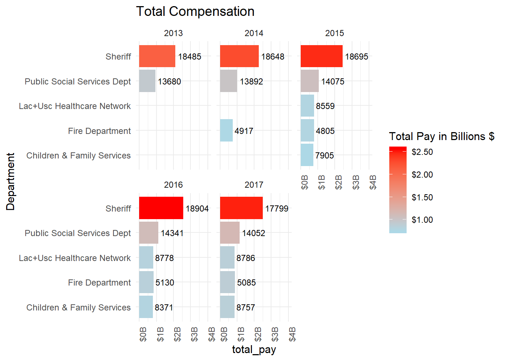

Data Analysis: LA County Employee Salaries Visualized
- Looking at LA County employee salaries
- Leave Time Payouts
- Comparing Overtime Pay for the Most Common Job Titles
- Which Employees are Banking the Most Overtime Earnings?
- Closer Look at Overtime Pay for Departments
- Base Pay For Different Job Titles
- Total Budgets: What is the total compensation paid by each department?
- Which Departments Receive Greatest Share of Compensation?
- Basepay to Total Compensation Ratio
Looking at LA County employee salaries
In this post, we will be examining which LA County employees are getting paid the most and which departments and positions are taking home the most compensation. After looking through these charts, I have a feeling that some of you will be asking yourself, “Why don’t I work for LA County?”
The Data
In an effort to be transparent, LA has published this dataset that contains the salary information on 123,000 unique LA County employees over 5 years from 2013-2017. In total there are 524,113 rows and 20 variables. These variables include the name, department, position title, pension contributions, leave time payouts, total benefits, base pay, and total compensation (among several others) for each employee. If you want to play around with the data yourself, you can find them here.
Quickly read in our data using fread():
##
Read 43.9% of 524113 rows
Read 87.8% of 524113 rows
Read 524113 rows and 20 (of 20) columns from 0.088 GB file in 00:00:04
Let’s start by looking at the total compensation for some of the most common positions in LA County. Note that total compensation includes everything from base pay to overtime, to unpaid sick leave, bonuses and anything else all added together. I’ve highlighted the median (50th percentile) total compensation for each job position given as reference.
A couple things: sheriffs and firefighters have a extremely long-tailed distributions of total compensation. The firefighter distribution is the widest of any, suggesting a huge variation in firefighter pay. A sizeable portion of them (the top 50% or so) are pulling in $200K+ per year. But overall it looks like the highest paid person comes from the LAC/USC hospital network.
The second thing is that you can see what appears to be two career levels for many of the departments (i.e., a bimodal distribution of salaries). For example, there seem to be two tiers: an entry tier where people make around $70-80k and a more advanced career tier where many make $150k or more. This is particularly clear for sheriffs and children and family services workers.
Leave Time Payouts
As has been noted in a few news articles, upon retirement some LA County employees can receive unused leave/vacation pay benefits of $100,000 or more. This has led some to suggest putting a cap on the number of unused sick, comp, holiday, and vacation days (e.g., 80 sick day maximum). Let’s see roughly how many people are collecting huge leave time payouts.
Yes, indeed there is a very small but noticeable segment of employees that are collecting between $50-300k upon retirement. Part of this is due to union contracts that allow employees to accrue all these unused days and get them paid out in a lump sum, according to this article: http://articles.latimes.com/2012/jan/07/local/la-me-county-pay-20120108

If you look very carefully on the x-axis, you can just barely make out the couple hundred individuals with leave time payouts over $50,000. It’s not indicated in the chart above, but most of these big payouts come from the Sheriff’s department or from firefighters.
Comparing Overtime Pay for the Most Common Job Titles
Here we will look and distributions of over time pay among the 10 most common job titles.
We can see that most of these common jobs don’t have much overtime pay, but for sheriffs, sergeants, and firefighters there is substantial overtime pay. In fact, for the average fire fighter, it looks like she takes home about at least $25,000 in overtime per year.
Which Employees are Banking the Most Overtime Earnings?
From the charts above, we can see some people are making hundreds of thousands in extra income from their overtime pay. Which people are these?
Again you can see just how many people are earning overtime pay over $50,000 per year. And there are some people, such as Thomas Ray, who have made at least half a million dollars in overtime in just two years. Keep in mind this graphic aggregates all years between 2013-2017, so some people’s names appear more than once.
Prior to 2016, only one person made more than $225,000 in overtime, but that number has increased quite a bit since then. This is likely due to the spate of wildfires in California over the past years.
To learn more about the specific people, you can check out this article: http://www.culvercityobserver.com/story/2018/06/14/opinion/los-angeles-firefighter-earns-half-a-million-via-overtime/7595.html
Closer Look at Overtime Pay for Departments
As we’ve seen, some departments have vast amounts of overtime pay, while others have next to none. Let’s take a closer look by first filtering out anyone who makes less than $10,000 in overtime, and then counting the most common job titles among those not removed.
This ECDF chart highlights the huge disparity in overtime earnings from the different departments. For example, 99% of Custody Assistants make less than $50k in overtime, but only 25% of Fire Captains make less than $50k in overtime!
Fire Captains in the 95th percentile are making about $150k in overtime, compared to registered nurses in the same percentile bracket who would be making $50,000.
Base Pay For Different Job Titles
There is a huge amount of variation in base pay for different job titles. Let’s look at which pay the highest base salary.
We can see that pretty much every top-paying job is related to medicine. Neurosurgeons’ base pay is just slightly higher than anesthesiologists’ and onocologists’. These people are the cream of the crop. Notice that there are only a few hundred people with these jobs out of over 120,000 LA County employees.
Looks like the legal and information departments pull down the biggest salaries. But there are relatively few people working in those departments. For example, there are only 52 employees in the Chief Information Office, but nearly 93,000 LA County Sheriffs.
Total Budgets: What is the total compensation paid by each department?
Here we will try to estimate the total LA County compensation budget by adding up all the total compensation for

We can see that Sheriffs makes up a big share of the total compensation, simply because there are so many employees. Each year the Sheriff’s department is spending about $2 billion dollars in employee compensation. Also note that the total Sheriffs budget for 2015 was about $4 Billion. This means about half of that budget goes towards employee compensation.
Also we can see that the number of Sheriffs has gone down since 2013. There is currently a shortage of Sheriffs in LA County, and one effect of this shortage is that current Sheriffs will need to work more overtime. This is one reason why Sheriffs showed up on our chart of the jobs with the biggest amount of overtime pay.
Which Departments Receive Greatest Share of Compensation?
We’ll re-do the above chart and focus on the percentage of all LA County employee compensation by department. We already know the Sheriffs pay the most in compensation, but what % of all compensation is Sheriffs compensation?
We can think of this chart as showing how much of LA’s ‘compensation pie’ is going to each department. Of course we need police, but should LA really be spending over 20% of its compensation budget on Sheriffs? I’m not an expert, but that seems quite high to me.
Basepay to Total Compensation Ratio
Total compensation includes base pay, plus any pension contributions, medical benefits, overtime, leave time, bonuses and anything over and above base salary.
In this chart, we will look at the jobs where employees tend to earn relatively low base pay but high amounts of total compensation pay. We do this by creating a ratio of the average extra compensation (total compensation - base earnings) and dividing by the average base salary.
We can see an interesting u-shaped relationship between the total compensation ratio and the base pay. On the left side, we have jobs with relatively low base pay, but anything above the reference line at 1.0 indicates that on average, employees earn as much or more than their base pay in extra compensation(paid leave, bonuses, etc.). So a Section Manager earns about $50k base, but almost never earns overtime.
In contrast, an Assistant Cook earns about $45k base, but earns on average another $45k or more in extra compensation (but keep in mind there are only about 9 Assistant Cooks). So Assistant cooks have a high overtime/base ratio. At the very top of this ratio are Senior Pilots in Fire Services, who earn quite a bit base salary ($150k) and then average over 1.5X that amount in extra compensation.
This slightly different version of the previous chart shows the departments and the relationship between base pay and extra pay (Total compensation - base pay). We see a pretty linear relationship here, with a few outliers. Notice that the standard deviation of extra pay is mapped to the size of the point. So for example, non-departmental, Sheriffs, and Fire Department employees have a big variation in extra compensation. In general, this chart reveals that the more your base pay is, the more compensation benefits you tend to receive. And if you’re a fire fighter, you tend to receive a lot more extra compensation than most other departments.
All the high base-pay employees appear to be doctors and all the high extra pay employees seem to be sheriffs. Ronald Brown was LA County’s top public defender, who recently retired.
One interesting thing about this chart is that you can make out a kind of ‘fork’ in the scatter of high-earning employees: right at about $120,000 base pay, people either tend to go upwards and bank extra compensation in the form of time leave and overtime, or they tend to keep relatively low extra pay but get much higher base pay. It looks like sheriffs and firefighters tend to do the former, while medical doctors go the latter route.
Conlusion
I was surprised to learn that county employees could make this much money. I never realized that some police and firefighters were working so much overtime. I’d be curious to hear from some of these people: do they think their work is being fairly compensated? Just judging by the numbers here, I’d be willing to wager most do. According to the LA Times article referenced above, a lot of the big compensation packages are the result of the unions’ bargaining power.
Nevertheless, I wonder if it’s fair for there to be such a disparity in income for certain kinds of workers, particularly sheriffs and firefighters. It doesn’t seem reasonable to me that one firefighter could make $100,000 one year while another makes $600,000 in the same county. I’m all for paying people a fair wage, but what about other professions similarly needed in society that don’t receive anywhere near these kinds of payouts? Public school teachers, for example. If anyone has any LA county teachers’ salary data, let me know!
Anyhow, for young people deciding on a career, I would definitely suggest looking at these kinds of city/county jobs, especially since there is a shortage of sheriffs and wildfires seem to be happening more than ever in California.